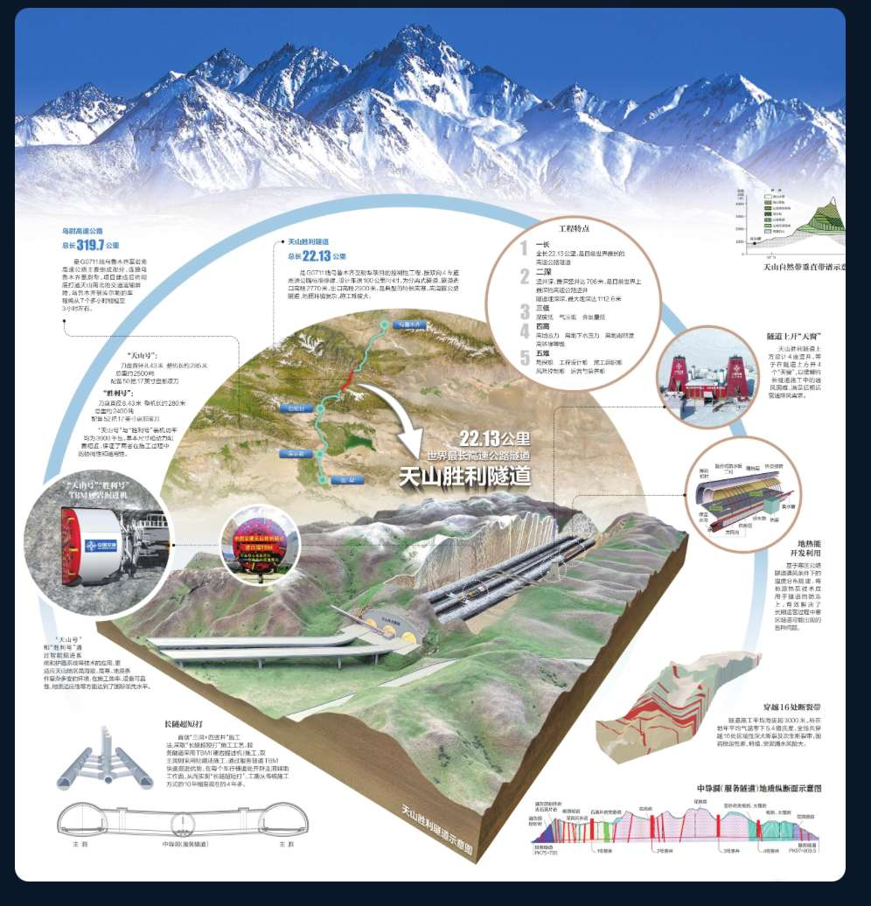
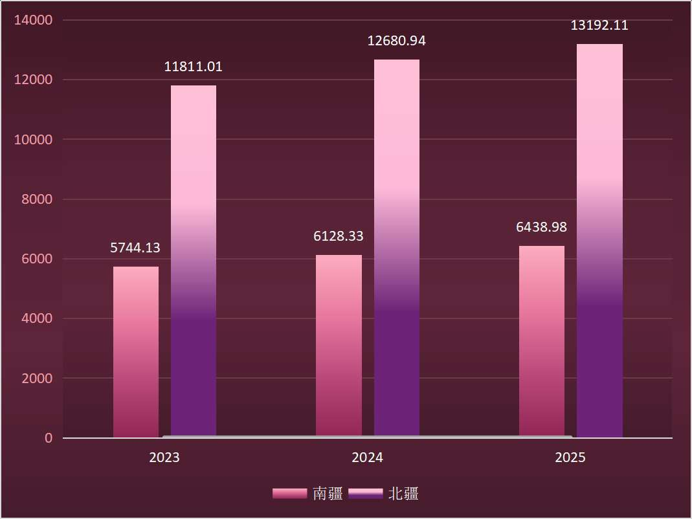

天山山脉海拔地形示意图
地理 · 屏障
横亘在准噶尔盆地与塔里木盆地之间的天山，是一道海拔落差超过 4280 米的天然屏障。北坡的乌鲁木齐海拔约 800 米，越过 4280 米的胜利达坂，南坡的库尔勒已降至 930 米。
直线距离不过 250 公里，但实际行驶里程却接近 470 公里——天山，让「近在咫尺」变成了「远在天边」。
乌鲁木齐与库尔勒之间的直线距离仅约 250 公里，相当于北京到石家庄。但天山横亘其间，实际公路里程达 470 余公里，驾车需翻越海拔 3000 米以上的达坂，冬季常因积雪结冰中断通行。
据新疆交通运输厅统计，全年能够稳定通行的翻越天山通道，长期以来仅有一条——绕行托克逊，耗时超过 7 小时。
0
乌鲁木齐—库尔勒，老路车程
「常年行走在乌鲁木齐与库尔勒之间的货运司机眼中，这意味着清晨出发、傍晚抵达的漫长奔波，若遇大雪封山，一等就是好多天。」
—— 中交新疆交通投资发展有限公司总工程师 苗宝栋
「以后去库尔勒就不用翻越危险的老虎口或者绕行 500 公里了。」
—— 216国道养护工 坎阶别克·哈吾斯力力
对于世代生活在天山两侧的人们来说，这条路不是选项，是刚需。南疆的羊要进北疆的市场，北疆的货要下南疆的县城，病人要转院，学生要回家——天山阻隔的，从来不只是风景。
历史 · 拓荒
新疆公路总里程变化
数据来源：新疆交通运输厅公路里程统计（1949-2025）· 点击柱状查看详情
新疆的公路史，是一部用脚步丈量荒漠的拓荒史。1949 年，新疆全区公路通车里程仅有 3361 公里——不及今天北京一座城市的地铁运营里程。到 1978 年改革开放前夕，这个数字增长到 2.38 万公里。2024 年底，新疆公路总里程突破 23 万公里，2025 年底达到 24.6 万公里。
76 年间，新疆公路里程增长了 72 倍，但天山始终是横亘在南北疆之间的「最后一公里」——不是没有路，是没有一条不绕远、不封山、不冒险的路。
1949 年 0.34 万 → 2025 年 24.6 万 公里，增长 72 倍。但截至 2020 年乌尉高速开工前，跨越天山的高等级公路数量为零。新疆「疆内环起来」的交通格局，天山是最后一块拼图。
长度 · 世界之最
22.13 公里是什么概念？它相当于 5 座南京长江大桥首尾相连，比排名第二的挪威洛达尔隧道（24.5 公里，但非高速公路标准）在高速公路隧道分类中更胜一筹。天山胜利隧道以 22.13 公里的单洞长度，成为世界高速公路隧道的新标杆。
但「最长」只是表象。「最深」和「最难」才是它的底色：最大埋深 1112.6 米，相当于把 3 座广州塔「小蛮腰」叠起来埋进山体；穿越 16 条地质断裂带，高寒、高海拔、高地应力、高地震烈度、高环保要求——工程界称之为「五高」禁区。
天山胜利隧道 22.13km（世界最长高速公路隧道）| 最大埋深 1112.6m | 2 号竖井深 707m（世界最深高速公路竖井）| 穿越 16 条地质断裂带 | 高地应力达 22 兆帕

天山胜利隧道工程总览：乌尉高速总长319.7公里，隧道全长22.13公里（世界最长高速公路隧道），最大埋深1112.6米，穿越16条地质断裂带，采用「三洞+四竖井」长隧短打方案。
乌尉高速全长 319.7 公里，双向四车道，设计时速 100-120 公里。隧道采用全球首创的「三洞 + 四竖井」方案——在传统左右双主洞之间增设中导洞，以硬岩掘进机（TBM）先行打通，再向两侧主洞开辟 14 个作业面同时施工，实现「长隧短打」。
乌尉高速 319.7km 全线 | 隧道 22.13km | 双向 4 车道 | 设计时速 100-120km/h | 三洞+四竖井方案 | 14 个作业面同时施工 | 工期从 72 个月压缩至 52 个月
「天山打隧道，就像在豆腐脑里做工程。」在破碎带里掘进，塌方、岩爆、软岩大变形、突涌水随时可能发生。干了一辈子基建的他，也感受到了前所未有的压力。
—— 中交新疆交通投资发展有限公司总工程师 苗宝栋
难度 · 五高禁区
16条地质断裂带分布
天山胜利隧道穿越的地质条件极为复杂。北段进口群集中了 12 条断裂带，南段出口群 4 条。其中 F6 和 F7 是两条宽度超过 350 米的超大型破碎带，其余 14 条为中小型次生派生断裂。
地质纵断面显示，隧道穿越的岩层从炭质板岩到花岗闪长岩，从石英片岩到断层破碎带，硬度、稳定性、含水率天差地别。
16 条断裂带 | 北段 12 条（进口群）+ 南段 4 条（出口群）| F6、F7 宽度超 350m | 岩层类型：炭质板岩、花岗闪长岩、石英片岩等

天山胜利隧道地质纵断面示意图：展示炭质板岩、花岗闪长岩、石英片岩等岩层分布及断层产状，全线共穿越16条断层破碎带
「这是我工作近30年遇到的最复杂的工程。」
—— 乌尉项目总经理部总经理 周政
破局 · 长隧短打
72 → 0个月
传统钻爆法预计工期 → 创新"主洞+中导洞"工法压缩为实际工期（个月）
如果采用传统的「打眼放炮」钻爆法，打通天山胜利隧道需要 72 个月——整整 6 年。但「老乡们等不起」，苗宝栋说，「创新是唯一选择。」
中交集团为天山胜利隧道量身定制了两台硬岩掘进机——「天山号」和「胜利号」。它们像两条钢铁巨龙，在多种世界级复杂地层中安全、高效地掘进。配合「主洞+中导洞」的创新工法，14 个作业面同时推进，最终将工期从 72 个月压缩至 52 个月。
传统钻爆法 72 个月 → 创新工法 52 个月 | 工期压缩 20 个月，节约近 28% | 2024.12.30 贯通 | 2025.12.26 全线通车

天山胜利隧道施工关键节点时间线
「这是技术突破的胜利，是生态保护的胜利，更是为新疆人民开辟幸福之路的胜利。」
—— 中交新疆交通投资发展有限公司总工程师 苗宝栋，2024年12月30日天山胜利隧道贯通时
文旅 · 春节
0
通车首个春节，库尔勒文旅消费总额

通车前后春节文旅消费对比：全市接待游客总量 39.26万人次→52.80万人次（+34.5%）；文旅消费总额 2.28亿元→3.11亿元（+36.4%）；人均消费提升约+36.4%；总增收0.83亿元
通车后的第一个春节，库尔勒交出了一份令人意外的答卷。全市接待游客总量从 39.26 万人次跃升至 52.80 万人次，增长 34.5%；文旅消费总额从 2.28 亿元增至 3.11 亿元，增长 36.4%。仅一个春节，库尔勒就增收 8300 万元。
游客 39.26 万 → 52.80 万（+34.5%）| 消费 2.28 亿 → 3.11 亿（+36.4%）| 人均消费提升约 36.4% | 总增收 0.83 亿元
"乌尉高速通车，让一日内往返体验南北疆不同风情的愿望得以实现。"
—— 巴州昆仑四运旅游服务有限公司副总经理 李震
"马上就是博斯腾湖冬捕活动了，乌尉高速全线通车会带来更多游客，我们已经做好了充足的准备。"
—— 巴音郭楞州博湖县文旅局局长 袁阳（据人民日报报道）
天山—沙漠—绿洲三大景观带被一条路串联，沿线文旅产业加速从"打卡式"向"深度游"转型。
"乌尉高速建成通车，于新疆加快丝绸之路经济带核心区交通枢纽建设具有重要意义。"
—— 自治区交通运输厅党委书记、副厅长 郭胜
经济 · 差距
南北疆经济协同发展

南北疆GDP差距比值（亿元）：2023年 南疆5744.13 / 北疆11811.01（比值2.06）；2024年 南疆6128.33 / 北疆12680.94（比值2.07）；2025年 南疆6438.98 / 北疆13192.11（比值2.05）
南北疆的经济差距，是新疆发展最核心的结构性问题。2023 年，南疆五地州 GDP 合计 5744 亿元，北疆 11811 亿元，差距比值 2.06。2024 年，差距比值微升至 2.07。2025 年，乌尉高速通车元年，差距比值回落至 2.05——首次回落。
0.02 的微小变化，背后是南疆经济增速的加快。交通基础设施的改善，正在逐步缩小这道横亘多年的发展鸿沟。
2023 年 南疆 5744 亿 / 北疆 11811 亿（比值 2.06）| 2024 年 南疆 6128 亿 / 北疆 12681 亿（比值 2.07）| 2025 年 南疆 6439 亿 / 北疆 13192 亿（比值 2.05）——差距比值首次回落
"乌尉高速全线通车后，有效贯通南北疆经济脉络，让区域资源流动更通畅、产业联动更紧密，构建起区域协同发展新格局。"
—— 自治区交通运输厅运输管理处干部 王瑞
"一直都盼着。乌尉高速通车了，我们的'致富快车'也可以出发了。"
—— 乌鲁木齐市乌鲁木齐县萨尔达坂乡萨尔乔克村党支部书记 哈力夏·夏依木尔旦
物流 · 牧业
物流变革：和静县牧业
和静县牧业运费成本（陆运）对比：费用成本（过路费+烧气）通车前2050元→通车后1900元；时间成本通车前2天1个往返→通车后1天1个往返
和静牧业：运费降了，羊能进乌鲁木齐了
巴音布鲁克振鑫牧业的孟克巴图算了一笔账：通车前，一趟货车到乌鲁木齐，费用 2050 元，2 天才能跑一个往返；通车后，费用降到 1900 元，1 天就能跑完一个往返。"以前天山阻隔，我们南疆的羊很难进入乌鲁木齐市场。"孟克巴图说，通车后客户主动找上门，公司成立以来第一次有这么多订单。
和静牧业运费 2050 元 → 1900 元 | 时间 2 天 → 1 天
物流 · 水产
巴州冷水鱼：从 8% 损耗到近零
巴州冷水鱼：从 8% 损耗到近零
巴州万锦水产的许纪伟更直观地感受到了变化：和静到乌鲁木齐的冷水鱼运输，时间从 10 小时压缩到 3.5 小时，死亡率从 15% 降至 3%——时间减少 65%，死亡率降低 70%。博斯腾湖到乌鲁木齐的运输也从 48 小时压缩到 24 小时。公司年产 50 余吨冷水鱼，通车后预计年产值从 300 万增长到 450 万。
冷水鱼 和静→乌市 10h/15% 死亡率 → 3.5h/3% | 博湖→乌市 48h/4% → 24h/2% | 巴州→内地 60h/5% → 40h/3%
"高速开通后，我们往各地发运产品会更方便，物流成本也能降低不少。目前公司年产商品鱼50余吨，年产值大概300万，通车后运输效率提升会极大带动销售增长，预计年产值能达到450万左右。"
—— 巴州万锦水产有限责任公司负责人 许纪伟
"依托这条路，和静县光热滋养的高色素辣椒、草原雪水哺育的牛羊肉等特色农产品，可实现3小时直达北疆核心市场，彻底打破长期以来的交通瓶颈，推动农业向高质量、规模化、品牌化转型。"
—— 和静县农业农村局党组成员、副局长 单丁苏荣
增长 · 十年 5.3 倍
0
2025年新疆全年接待游客量
新疆旅游业的增长曲线，是一条陡峭的上升线。2015 年，全年接待游客 0.61 亿人次；2019 年突破 2 亿大关，达到 2.13 亿人次；经历了 2020 年的短暂回落后，2023 年反弹至 2.65 亿人次；2025 年，全年接待游客 3.23 亿人次，游客花费 3700 亿元，同比分别增长 8% 和 8.4%，创历史新高。
从 0.61 亿到 3.23 亿，十年间增长了 5.3 倍。旅游业的爆发式增长，背后是独库公路、阿禾公路、乌尉高速等一条条「最美公路」的相继通车。「新疆是个好地方」从一句口号变成了 3.23 亿人次的选择。
2015 年 0.61 亿 → 2019 年 2.13 亿 → 2020 年 1.58 亿 → 2023 年 2.65 亿 → 2025 年 3.23 亿 | 十年增长 5.3 倍 | 2025 年游客花费 3700 亿元
0
2030年规划目标：年接待游客
目标 · 2030 年 5 亿
2026 年自治区政府工作报告提出，深入实施旅游兴疆战略，"十五五"期间力争年接待游客突破 5 亿人次。乌尉高速只是起点——"十五五"启程，自治区交通运输厅党委书记郭胜表示，将"锚定加快建设交通强国目标任务"。
2026 年 6 月上旬，全疆累计接待游客 1120 万人次，同比增长 7.55%。独库公路沿线、赛里木湖景区日均接待量分别同比增长 35% 和 41%。自驾游占总出行比例的 87.32%，深度体验式旅游正在取代打卡式观光。
2030 年目标 5 亿人次 | 2026 年 6 月上旬 1120 万人次（+7.55%）| 赛里木湖日均 12.6 万人次（+41%）| 自驾游占比 87.32%
"数字不重要，重要的是这些工程是否真正造福人民。"
—— 中交新疆交通投资发展有限公司总工程师 苗宝栋
"'十五五'启程，我们将锚定加快建设交通强国目标任务。"
—— 自治区交通运输厅党委书记 郭胜
从天山胜利隧道望出去，乌尉高速往东可通过京新高速衔接京津冀，通过连霍高速衔接长三角；往南通过西和高速衔接西部陆海新通道，通达粤港澳大湾区和成渝地区。这条路不仅连接了乌鲁木齐和库尔勒，更将成为中国东部经济圈与亚欧国家连通的重要枢纽。
穿越天山，从来不只是工程问题。